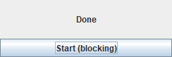
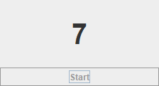
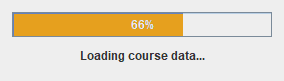
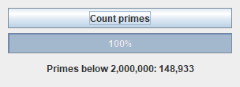

เมื่อจบบทนี้ นิสิตจะทำได้ อธิบายบทบาทของ Event Dispatch Thread ใช้ javax.swing.Timer สำหรับ event ตามช่วงเวลา แยกงานที่ใช้เวลานานไปทำเบื้องหลังด้วย Thread และ SwingWorker อัปเดต Swing component บน EDT เท่านั้น
ให้หน้าต่างตอบสนองเสมอ
Swing event handler ทำงานบน Event Dispatch Thread (EDT) ซึ่งมีหน้าที่รับ event และวาด/อัปเดต UI ถ้า handler หยุดรอนาน event อื่นและการวาดหน้าจอจะรอไปด้วย บทนี้เริ่มจาก thread ใน console เพื่อเข้าใจแนวคิด แล้วจึงนำไปใช้กับ Swing ภาพหน้าต่างถ่ายหลังโปรแกรมทำงานไประยะหนึ่ง (ระบุเวลาในคำบรรยายภาพ)
S2.1 Thread และ Event Dispatch Thread
Thread คือเส้นทางการทำงานหนึ่งเส้นในโปรแกรม โปรแกรมทั่วไปเริ่มด้วย thread ชื่อ main โปรแกรม Swing มีอีก thread คือ EDT ที่รอ event และวาดหน้าจอ เราสร้าง thread เพิ่มเพื่อทำงานพร้อมกันได้
เมธอด ทำอะไร new Thread(() -> { ... })สร้าง thread พร้อมงานที่จะทำ (ยังไม่เริ่ม) start()เริ่มทำงานคู่ขนานทันที ผู้เรียกไม่รอ join()รอให้ thread นั้นทำเสร็จ Thread.sleep(ms)หยุด thread ปัจจุบันตามเวลาที่กำหนด
ตัวอย่าง S2.1.1 สอง thread ทำงานสลับกัน (console)TwoThreads.java
public class TwoThreads {
public static void main (String [] args) throws InterruptedException { // join() อาจโยน exception
Thread worker = new Thread (() -> {
for (int i = 1 ; i <= 3 ; i++) {
System .out.println ("worker step " + i);
sleep (120 ); // รอ 120 มิลลิวินาที
}
});
worker.start (); // เริ่มคู่ขนาน main ไม่รอ
for (int i = 1 ; i <= 3 ; i++) {
System .out.println ("main step " + i);
sleep (100 );
}
worker.join (); // รอ worker จบ
System .out.println ("both finished" );
}
static void sleep (int ms) {
try { Thread .sleep (ms); } catch (InterruptedException e) { } // บังคับให้ดัก exception
}
}ผลลัพธ์ worker step 1
main step 1
main step 2
worker step 2
main step 3
worker step 3
both finished คำแนะนำ ข้อความของสอง thread สลับกัน ลำดับอาจต่างเล็กน้อยในแต่ละครั้งที่รัน
sleep บน EDT ทำหน้าต่างค้าง
listener ด้านล่างเปลี่ยนข้อความเป็น Working... แล้ว sleep 2 วินาที ดูว่าหน้าจอแสดงอะไร
ทดลองบั๊ก S2.1.2 Thread.sleep บน EDT ทำหน้าต่างค้างFrozenUi.java
import javax.swing.*;
import java.awt.*;
public class FrozenUi {
public static void main (String [] args) {
SwingUtilities .invokeLater (() -> {
JFrame frame = new JFrame ("Frozen" );
frame.setDefaultCloseOperation (JFrame .EXIT_ON_CLOSE );
JLabel status = new JLabel ("Idle" , SwingConstants .CENTER );
JButton start = new JButton ("Start (blocking)" );
start.addActionListener (e -> {
status.setText ("Working..." );
try {
Thread .sleep (2000 );
} catch (InterruptedException ex) { }
status.setText ("Done" );
});
frame.add (status, BorderLayout .CENTER );
frame.add (start, BorderLayout .SOUTH );
frame.setSize (260 , 120 );
frame.setVisible (true );
});
}
}หน้าต่างที่ได้ (ภาพจากโปรแกรมจริง) ภาพแรกที่จับได้หลังคลิก — ได้เมื่อ EDT ว่างแล้วเท่านั้น (หลัง 2 วินาที)
Frozen

ลองคิดก่อน · ทำไมไม่เคยเห็น Working... ภาพแสดง Done ทันที และระหว่าง 2 วินาทีนั้นหน้าต่างย้ายหรือกดอะไรไม่ได้ เพราะอะไร
ดูคำตอบ setText("Working...") แค่บันทึกว่าต้องวาดใหม่ การวาดจริงทำโดย EDT ภายหลัง แต่ EDT กำลัง sleep อยู่ใน listener จึงไม่มีโอกาสวาด เมื่อตื่นก็เปลี่ยนเป็น Done แล้ว แม้แต่โปรแกรมถ่ายภาพหน้าจอนี้ก็ต้องรอ EDT ว่างเหมือนกัน
ลองคิดก่อน · คลิกระหว่างค้าง ถ้าระหว่าง listener ข้างต้น sleep ผู้ใช้คลิกปุ่มอื่นอีก 3 ครั้ง จะเกิดอะไรขึ้น
ดูคำตอบ การคลิกถูกเก็บไว้ในคิว event และจะถูกประมวลผลต่อกันทันทีหลัง listener แรกจบ — ผู้ใช้จะรู้สึกว่าโปรแกรมไม่ตอบสนองแล้วกระตุก
S2.2 javax.swing.Timer: งานตามช่วงเวลา
new Timer(delayMs, listener) เรียก listener ซ้ำทุก delay มิลลิวินาที บน EDT จึงแก้ component ได้ปลอดภัย และระหว่างรอ EDT ว่างวาดหน้าจอ ใช้กับนาฬิกา นับถอยหลัง และแอนิเมชันง่าย ๆ
ข้อผิดพลาดที่พบบ่อย import ให้ถูก: ใช้ javax.swing.Timer ไม่ใช่ java.util.Timer ซึ่งทำงานบน thread อื่น
ตัวอย่าง S2.2.1 นับถอยหลัง 10 วินาทีCountdown.java
import javax.swing.*;
import java.awt.*;
public class Countdown {
private static int seconds = 10 ;
public static void main (String [] args) {
SwingUtilities .invokeLater (() -> {
JFrame frame = new JFrame ("Countdown" );
frame.setDefaultCloseOperation (JFrame .EXIT_ON_CLOSE );
JLabel label = new JLabel ("10" , SwingConstants .CENTER );
label.setFont (new Font ("SansSerif" , Font .BOLD , 40 ));
JButton start = new JButton ("Start" );
Timer timer = new Timer (1000 , null ); // ทุก 1000 ms บน EDT
timer.addActionListener (e -> { // เพิ่มทีหลัง lambda จึงอ้าง timer ได้
seconds--;
label.setText (String .valueOf (seconds)); // แก้ UI ได้ตรง ๆ
if (seconds == 0 ) {
timer.stop (); // ครบเวลา → หยุดตัวเอง
label.setText ("Time's up!" );
start.setEnabled (true );
}
});
start.addActionListener (e -> {
seconds = 10 ;
label.setText ("10" );
start.setEnabled (false ); // กันเริ่มซ้อน
timer.start ();
});
frame.add (label, BorderLayout .CENTER );
frame.add (start, BorderLayout .SOUTH );
frame.setSize (240 , 160 );
frame.setVisible (true );
});
}
}หน้าต่างที่ได้ (ภาพจากโปรแกรมจริง) ประมาณ 3 วินาทีหลังคลิก Start
Countdown

นาฬิกาจับเวลา
Timer อาจมาช้าเล็กน้อยทุก tick การนับ tick จึงคลาดเคลื่อนสะสม ให้ใช้ Timer แค่สั่งวาดใหม่ทุก 100 ms แต่คำนวณเวลาจริงจาก System.currentTimeMillis()
ตัวอย่าง S2.2.2 Start / Stop / ResetStopwatch.java
import javax.swing.*;
import java.awt.*;
public class Stopwatch {
private static long startMillis; // เวลาที่กด Start ล่าสุด
private static long accumulated = 0 ; // เวลาสะสมจากรอบก่อน
public static void main (String [] args) {
SwingUtilities .invokeLater (() -> {
JFrame frame = new JFrame ("Stopwatch" );
frame.setDefaultCloseOperation (JFrame .EXIT_ON_CLOSE );
JLabel display = new JLabel ("0.0 s" , SwingConstants .CENTER );
display.setFont (new Font ("Monospaced" , Font .BOLD , 32 ));
Timer timer = new Timer (100 , e -> {
long elapsed = accumulated + System .currentTimeMillis () - startMillis; // เวลาจริง
display.setText (String .format ("%.1f s" , elapsed / 1000.0 ));
});
JButton start = new JButton ("Start" );
JButton stop = new JButton ("Stop" );
JButton reset = new JButton ("Reset" );
start.addActionListener (e -> {
if (!timer.isRunning ()) { // กันกดซ้ำขณะเดิน
startMillis = System .currentTimeMillis ();
timer.start ();
}
});
stop.addActionListener (e -> {
if (timer.isRunning ()) {
timer.stop ();
accumulated += System .currentTimeMillis () - startMillis; // เก็บรอบนี้ไว้
}
});
reset.addActionListener (e -> {
timer.stop ();
accumulated = 0 ;
display.setText ("0.0 s" );
});
JPanel buttons = new JPanel ();
buttons.add (start);
buttons.add (stop);
buttons.add (reset);
frame.add (display, BorderLayout .CENTER );
frame.add (buttons, BorderLayout .SOUTH );
frame.setSize (260 , 150 );
frame.setVisible (true );
});
}
}หน้าต่างที่ได้ (ภาพจากโปรแกรมจริง) Start แล้ว Stop หลังประมาณ 1.6 วินาที
Stopwatch
คำแนะนำ ภาพแสดง 2.0 s แม้รอเพียง 1.6 วินาที เพราะรวมเวลาที่โปรแกรมจำลองใช้กดปุ่ม Start และ Stop ด้วย ตัวเลขบนเครื่องของนิสิตจะต่างไปตามจังหวะการกดจริง
ตัวอย่างเพิ่มเติม: แอนิเมชันแถบความคืบหน้า Timer ทุก 50 ms เพิ่มค่า JProgressBar ทีละ 2% (ครบ 100% ในประมาณ 2.5 วินาที) และเปลี่ยนสีจากแดง → ส้ม → เขียว ภาพที่ 1.3 วินาทีจึงอยู่ราวครึ่งทาง
ตัวอย่าง S2.2.3 Loading barProgressAnimation.java
import javax.swing.*;
import java.awt.*;
public class ProgressAnimation {
public static void main (String [] args) {
SwingUtilities .invokeLater (() -> {
JFrame frame = new JFrame ("Loading" );
frame.setDefaultCloseOperation (JFrame .EXIT_ON_CLOSE );
JProgressBar bar = new JProgressBar (0 , 100 );
bar.setStringPainted (true ); // แสดง % บนแถบ
JLabel status = new JLabel ("Starting..." , SwingConstants .CENTER );
Timer timer = new Timer (50 , null );
timer.addActionListener (e -> {
int v = bar.getValue () + 2 ;
bar.setValue (v);
bar.setForeground (v < 40 ? new Color (200 , 80 , 60 ) : v < 80 ? new Color (230 , 160 , 30 ) : new Color (60 , 160 , 60 ));
status.setText (v < 100 ? "Loading course data..." : "Ready!" );
if (v >= 100 ) timer.stop (); // ครบ → หยุด
});
timer.start ();
JPanel p = new JPanel (new GridLayout (2 , 1 , 6 , 6 ));
p.setBorder (BorderFactory .createEmptyBorder (12 , 12 , 12 , 12 ));
p.add (bar);
p.add (status);
frame.setContentPane (p);
frame.setSize (300 , 120 );
frame.setVisible (true );
});
}
}หน้าต่างที่ได้ (ภาพจากโปรแกรมจริง) ประมาณ 1.3 วินาทีหลังเปิดโปรแกรม
Loading

ลองคิดก่อน · Timer ถ้าใช้ while (seconds > 0) { Thread.sleep(1000); seconds--; label.setText(...); } ใน listener ของปุ่ม แทนการใช้ Timer จะเกิดอะไรขึ้น
ดูคำตอบ หน้าต่างค้าง 10 วินาทีและไม่เห็นตัวเลขเปลี่ยนระหว่างนั้น เพราะลูปบล็อก EDT — Timer แบ่งงานเป็นชิ้นสั้น ๆ ทำให้ EDT ว่างวาดหน้าจอระหว่างแต่ละ tick
S2.3 งานเบื้องหลังด้วย SwingWorker
งานที่ใช้เวลานานจริง ๆ (คำนวณหนัก อ่านไฟล์ใหญ่ ดาวน์โหลด) ต้องทำบน thread อื่น แต่ห้ามแก้ component จาก thread นั้น SwingWorker<T, V> แยกสองส่วนนี้ให้ชัด
เมธอดของ SwingWorker ทำงานบน thread ไหน แผนภาพ
worker.execute ()
│
├── doInBackground () ← background thread (ห้ามแตะ component)
│ publish (x) ───┐
│ ▼
├── process (chunks) ← EDT (อัปเดต progress ได้)
│
└── done () ← EDT (เรียก get() เอาผลลัพธ์ แล้วแสดงผล) ตัวอย่าง S2.3.1 นับจำนวนเฉพาะเบื้องหลังพร้อม progressPrimeWorkerDemo.java
import javax.swing.*;
import java.awt.*;
public class PrimeWorkerDemo {
public static void main (String [] args) {
SwingUtilities .invokeLater (() -> {
JFrame frame = new JFrame ("Background work" );
frame.setDefaultCloseOperation (JFrame .EXIT_ON_CLOSE );
JProgressBar bar = new JProgressBar (0 , 100 );
bar.setStringPainted (true );
JLabel result = new JLabel ("Primes below 2,000,000: ?" , SwingConstants .CENTER );
JButton go = new JButton ("Count primes" );
go.addActionListener (e -> {
go.setEnabled (false ); // กันกดซ้ำ
SwingWorker <Integer , Void > worker = new SwingWorker <>() { // <ผลลัพธ์, ค่าระหว่างทาง>
@Override
protected Integer doInBackground () { // background thread
int limit = 2_000_000 , count = 0 ;
for (int n = 2 ; n < limit; n++) {
if (isPrime (n)) count++;
if (n % 20_000 == 0 ) setProgress (n * 100 / limit); // 0-100 เรียกได้ปลอดภัย
}
return count; // ส่งต่อให้ done()
}
@Override
protected void done () { // EDT: แก้ UI ได้
try {
result.setText (String .format ("Primes below 2,000,000: %,d" , get ())); // get() = ผลลัพธ์
} catch (Exception ex) {
result.setText ("Error: " + ex.getMessage ());
}
bar.setValue (100 );
go.setEnabled (true );
}
};
worker.addPropertyChangeListener (ev -> { // ได้รับบน EDT
if ("progress" .equals (ev.getPropertyName ())) bar.setValue ((Integer ) ev.getNewValue ());
});
worker.execute ();
});
JPanel p = new JPanel (new GridLayout (3 , 1 , 6 , 6 ));
p.setBorder (BorderFactory .createEmptyBorder (10 , 10 , 10 , 10 ));
p.add (go);
p.add (bar);
p.add (result);
frame.setContentPane (p);
frame.setSize (320 , 150 );
frame.setVisible (true );
});
}
static boolean isPrime (int n) {
for (int d = 2 ; (long ) d * d <= n; d++) if (n % d == 0 ) return false ; // (long) กัน d*d ล้น
return true ;
}
}หน้าต่างที่ได้ (ภาพจากโปรแกรมจริง) ประมาณ 2.5 วินาทีหลังคลิก (งานเสร็จแล้ว)
Background work

คำแนะนำ ระหว่างคำนวณ ผู้ใช้ยังย้ายหน้าต่างหรือคลิกส่วนอื่นได้ เพราะ EDT ว่าง
ตัวอย่างเพิ่มเติม: ใช้ Thread เองแล้วส่งงานกลับด้วย invokeLater ถ้าใช้ Thread เองแทน SwingWorker ทุกการแก้ component ต้องห่อด้วย SwingUtilities.invokeLater เพื่อส่งกลับไปทำบน EDT วิธีนี้ยุ่งกว่า SwingWorker แต่ช่วยให้เข้าใจกลไก
ตัวอย่าง S2.3.2 ดาวน์โหลดจำลองManualThreadDemo.java
import javax.swing.*;
import java.awt.*;
public class ManualThreadDemo {
public static void main (String [] args) {
SwingUtilities .invokeLater (() -> {
JFrame frame = new JFrame ("Fake download" );
frame.setDefaultCloseOperation (JFrame .EXIT_ON_CLOSE );
DefaultListModel <String > log = new DefaultListModel <>();
JButton download = new JButton ("Download" );
download.addActionListener (e -> {
download.setEnabled (false );
new Thread (() -> { // thread ที่สร้างเอง
for (int part = 1 ; part <= 4 ; part++) {
try { Thread .sleep (250 ); } catch (InterruptedException ex) { return ; } // ไม่บล็อกหน้าจอ
final int p = part; // lambda ต้องใช้ตัวแปรที่ไม่เปลี่ยนค่า
SwingUtilities .invokeLater (() -> log.addElement ("received part " + p + "/4" )); // กลับไป EDT
}
SwingUtilities .invokeLater (() -> {
log.addElement ("download complete" );
download.setEnabled (true );
});
}).start ();
});
frame.add (new JScrollPane (new JList <>(log)), BorderLayout .CENTER );
frame.add (download, BorderLayout .SOUTH );
frame.setSize (260 , 170 );
frame.setVisible (true );
});
}
}หน้าต่างที่ได้ (ภาพจากโปรแกรมจริง) ประมาณ 1.5 วินาทีหลังคลิก
Fake download
S2.4 เลือกเครื่องมือและทดสอบ
สถานการณ์ เครื่องมือ เหตุผล อัปเดตทุก n มิลลิวินาที (นาฬิกา, นับถอยหลัง, แอนิเมชัน) javax.swing.Timerทำงานบน EDT แก้ UI ได้ตรง ๆ งานนานครั้งเดียวแล้วแสดงผล SwingWorkerแยก background/EDT ให้ชัด มี progress และ done() งานเบื้องหลังที่ไม่เกี่ยวกับ UI (console) Threadง่ายที่สุด ส่งงานจาก thread อื่นมาแก้ UI SwingUtilities.invokeLaterรับประกันว่าทำบน EDT
แยก logic เวลาออกจาก Timer
โค้ดที่ขึ้นกับเวลาจริงทดสอบช้า ให้ย้าย logic ไปไว้ในคลาสที่ไม่รู้จัก Timer หรือ Swing มีแค่เมธอด tick() ทดสอบโดยเรียก tick() เองได้ทันที แล้วในแอปจริงจึงให้ Timer เรียก tick()
ตัวอย่าง S2.4.1 ทดสอบ CountdownModel โดยไม่ต้องรอCountdownModelTest.java
public class CountdownModelTest {
public static void main (String [] args) {
CountdownModel m = new CountdownModel (3 );
System .out.println ("start: " + m.display () + " finished=" + m.isFinished ());
for (int i = 0 ; i < 5 ; i++) {
m.tick (); // เรียกเองแทน Timer
System .out.println ("tick " + (i + 1 ) + ": " + m.display () + " finished=" + m.isFinished ());
}
CountdownModel long1 = new CountdownModel (125 );
System .out.println ("125 s shows " + long1.display ()); // 02:05
}
}
class CountdownModel { // ไม่มีโค้ด Swing
private int remaining;
CountdownModel (int seconds) { remaining = seconds; }
void tick () {
if (remaining > 0 ) remaining--; // ไม่ติดลบแม้เรียกเกิน
}
boolean isFinished () { return remaining == 0 ; }
String display () {
return String .format ("%02d:%02d" , remaining / 60 , remaining % 60 ); // นาที:วินาที
}
}ผลลัพธ์ start: 00:03 finished=false
tick 1: 00:02 finished=false
tick 2: 00:01 finished=false
tick 3: 00:00 finished=true
tick 4: 00:00 finished=true
tick 5: 00:00 finished=true
125 s shows 02:05 Checklist เมื่อใช้ thread กับ Swing ไม่มี Thread.sleep หรือลูปยาวใน listener ไม่แก้ component จาก thread อื่นโดยไม่ผ่าน invokeLater / SwingWorker ปิดปุ่มเริ่มระหว่างทำงาน ป้องกันเริ่มงานซ้อน หยุด Timer เมื่อไม่ใช้ (stop) เพื่อไม่ให้ทำงานค้างเบื้องหลัง
แบบฝึกหัดท้ายบท
ข้อที่เป็น GUI ภาพตัวอย่างถ่ายหลังจากโปรแกรมทำงานตามเวลาที่ระบุ ตัวเลขที่เกี่ยวกับเวลาอาจต่างเล็กน้อยเมื่อรันบนเครื่องของนิสิต
ระดับความยาก: ★ ง่าย ★★ ปานกลาง ★★★ ท้าทาย
Exercise S2.1 หาสาเหตุหน้าต่างค้าง★ ง่าย อธิบายว่าทำไมปุ่มที่มี Thread.sleep(5000) ใน ActionListener จึงทำให้หน้าต่างค้าง แล้วเขียนโปรแกรม console ที่สาธิตแนวคิดเดียวกัน: thread หลักทำงานยาว 3 รอบ (รอบละ 200 ms) ขณะที่ thread “ui” พยายามพิมพ์ “refresh” ทุก 100 ms — เวอร์ชันแรกทำงานต่อกันใน thread เดียว เวอร์ชันที่สองแยกเป็นสอง thread ให้เห็นความต่าง
สิ่งที่ต้องทำ ใช้ Thread และ join() แสดงผลทั้งสองเวอร์ชันพร้อมหัวข้อ ตัวอย่างผลลัพธ์ == single thread ==
working 1
working 2
working 3
refresh (late)
refresh (late)
refresh (late)
== two threads ==
working 1
refresh
refresh
working 2
refresh
refresh
working 3
refresh
refresh Exercise S2.2 นาฬิกาดิจิทัล★ ง่าย สร้างหน้าต่างแสดงเวลาปัจจุบันรูปแบบ HH:mm:ss ตัวใหญ่ อัปเดตทุกวินาทีด้วย javax.swing.Timer และแสดงวันที่ด้านล่าง
สิ่งที่ต้องทำ ใช้ java.time.LocalTime.now() และ DateTimeFormatter.ofPattern("HH:mm:ss") เรียกอัปเดตครั้งแรกทันทีก่อน timer.start() เพื่อไม่ให้ว่าง 1 วินาที ตัวอย่างหน้าจอ (ภาพจากโปรแกรมเฉลย) Clock
Exercise S2.3 ตั้งเวลานับถอยหลังจากค่าที่ผู้ใช้ป้อน★★ ปานกลาง ผู้ใช้ป้อนจำนวนวินาที (1–3600) กด Start แล้วแสดงนับถอยหลังรูปแบบ mm:ss ปุ่ม Pause/Resume สลับได้ และเมื่อหมดเวลาให้ข้อความเป็นสีแดง “Time's up!” ตรวจข้อมูลที่ป้อนด้วย (แสดงข้อความ error ถ้าผิด)
สิ่งที่ต้องทำ ใช้ CountdownModel จากหัวข้อ S2.4 แยก logic ปุ่มเดียวเปลี่ยนข้อความระหว่าง Pause และ Resume ภาพตัวอย่าง: ป้อน 75 กด Start รอประมาณ 2 วินาที ตัวอย่างหน้าจอ (ภาพจากโปรแกรมเฉลย) Timer
Exercise S2.4 ไฟจราจรด้วย Timer★★ ปานกลาง สร้างไฟจราจรด้วย JLabel 3 ดวง (วงกลมแทนด้วยพื้นหลังสี) ที่เปลี่ยนสถานะตามลำดับ เขียว 3 วินาที → เหลือง 1 วินาที → แดง 3 วินาที วนซ้ำ ดวงที่ไม่ติดแสดงเป็นสีเทาเข้ม และแสดงชื่อสถานะกับวินาทีที่เหลือ
สิ่งที่ต้องทำ Timer tick ทุก 1 วินาที และเก็บ state (index ของไฟ, วินาทีที่เหลือ) ระยะเวลาแต่ละสถานะเก็บในอาเรย์ {3, 1, 3} JLabel ต้อง setOpaque(true) เพื่อแสดงสีพื้น ภาพตัวอย่าง: ประมาณ 3.5 วินาทีหลังเริ่ม (ไฟเหลือง) ตัวอย่างหน้าจอ (ภาพจากโปรแกรมเฉลย) Traffic light
Exercise S2.5 เกมจับเวลากดปุ่ม (reaction test)★★★ ท้าทาย สร้างเกมทดสอบความไว: กด Ready แล้วรอเวลาสุ่ม 1–3 วินาที (ใช้ Timer แบบครั้งเดียว setRepeats(false)) จากนั้นพื้นหลังเปลี่ยนเป็นสีเขียวพร้อมข้อความ “CLICK!” ผู้เล่นกดปุ่ม Click ให้เร็วที่สุด แสดงเวลาตอบสนองเป็นมิลลิวินาที ถ้ากดก่อนเขียวให้แจ้ง “Too early!” เก็บสถิติเวลาที่ดีที่สุด
สิ่งที่ต้องทำ state: waiting / ready / go ใช้ System.nanoTime() วัดเวลา สุ่มเวลาด้วย Random ภาพตัวอย่าง: กด Click ทันทีหลัง Ready (กดก่อนเวลา) ตัวอย่างหน้าจอ (ภาพจากโปรแกรมเฉลย) Reaction test
Exercise S2.6 ประมวลผลไฟล์จำลองด้วย SwingWorker แบบยกเลิกได้★★★ ท้าทาย จำลองการประมวลผลข้อมูล 50 รายการ (แต่ละรายการใช้เวลา 40 ms ด้วย Thread.sleep ใน doInBackground) แสดง progress bar และรายการที่ประมวลผลแล้วใน JTextArea ผ่าน publish/process มีปุ่ม Cancel ที่หยุดงานได้ทันที (worker.cancel(true)) และเมื่อจบให้แสดงว่า “Completed” หรือ “Cancelled after N items”
สิ่งที่ต้องทำ SwingWorker<Integer, String>: ผลลัพธ์คือจำนวนที่ทำเสร็จ, ข้อมูลกลางทางคือข้อความ ใน doInBackground ตรวจ isCancelled() ทุกรอบ ใน done() ตรวจ isCancelled() ก่อนเรียก get() ภาพตัวอย่าง: Start แล้วกด Cancel หลังประมาณ 0.6 วินาที ตัวอย่างหน้าจอ (ภาพจากโปรแกรมเฉลย) Processor